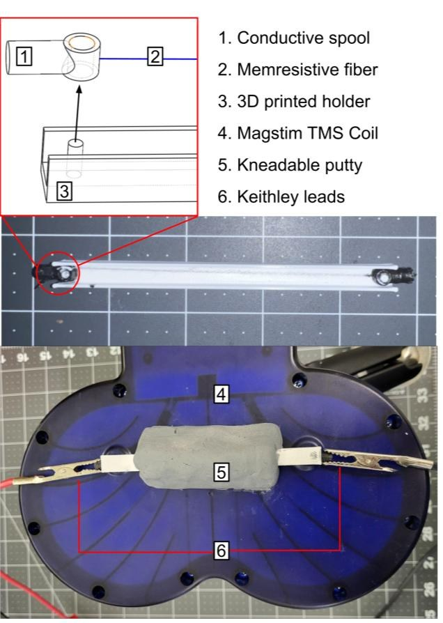

Other work, same engineering mindset.
A selection of supporting work from magnetic shielding, neuromorphic materials, laboratory automation, and experimental fixtures. As more project files are added, these can become independent technical case studies.
Main interactive showcase
Browse research hardware studies.
Choose a project preview to inspect its mechanical setup or experimental context.
FIGURES FROM VCU DISSERTATION · IMAGE PREVIEW
Choose a related area
Related work.
Future iterations can turn these areas into their own full project pages with additional source materials.

01 / TOOLING
Test fixtures
Precision hardware for controlled measurement and repeatable assembly.
Explore section
02 / ELECTRONICS
Instrumentation
Electrical measurement and acquisition hardware for low-noise experiments.
Explore section
03 / SCIENCE
Materials
Conductive composites and viscoelastic surrogates.
Explore section